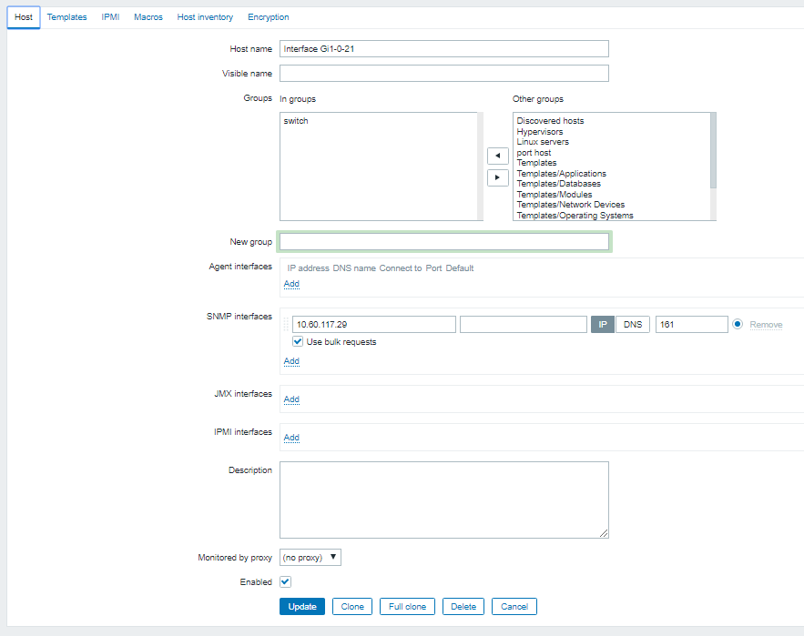
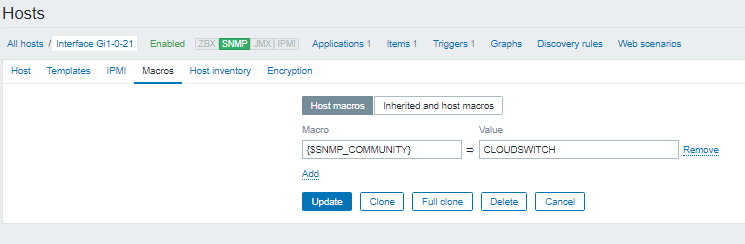
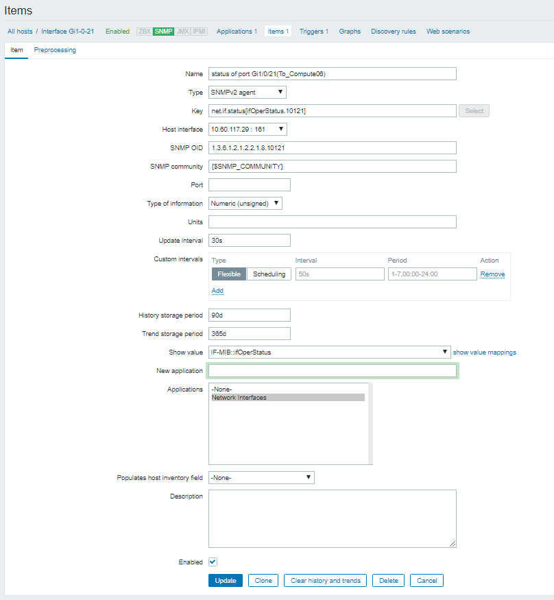
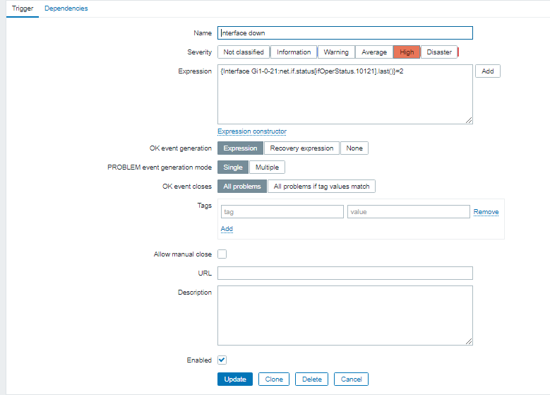

Cấu hình zabbix để nhận cảnh báo về 1 interface của switch down:¶
- 1.Tại zabbix UI, thêm host : vào Configuration > host > create host
Thông tin cơ bản
 Thiết lập SNMP_COMMUNITY tại tab Macros  - 2.Tạo item của host vửa tạo :
- Type: SNMP2 agent
- Key: net.if.status[ifOperStatus.*] thay * bằng tên oid port cần monitor , vd net.if.status[ifOperStatus.10121]
- Type of information: Numeric (unsigned); Data type: Decimal
- Show Value: IF-MIB::ifOperStatus
-
Application: Network Interfaces 
-
4.Tạo trigger:
- Name: interface down
- Severity: High
- Expression:
{Interface Gi1-0-21:net.if.status[ifOperStatus.10121].last()}=2
với Interface Gi1-0-21:net.if.status[ifOperStatus.10121] là item thêm ở trên . bật trigger khi giá trị bằng 2 